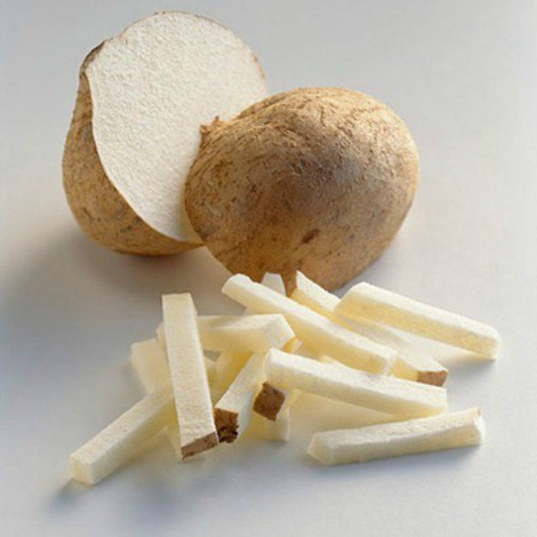

Retreat 2019
This is our first lab retreat and it was focused in “Learn what colleagues are working on”, the retreat was in Queretaro, Mexico.
Genomic Regulation
Karen Julia Nuñez-Reza
Modeling the regulatory network controlling dendritic cell differentiation from human monocytes
Ph.D. student in Biomedical science
Dendritic cells (DCs) derived from monocytes differentiation
Logical model based on literature, verification with transcriptional data and improve the model with new experiments
CSF-2 and IL-4 pathway mapping is important in DC differentiation
Ana Victoria Leon Apodaca
Modelling the regulatory network controlling dendritic cell differentiation from human monocytes
Undergrad student (internship)
Experimental test of DCs model
Monocyte isolation from human blood
Inhibite important TF from the model
RT-PCR from important nodes from the model
Lucia Ramirez
Characterizing ePromoters
Undergraduate student in Genomic Sciences Program
ePromoters: some promoters have enhancing activity
Identification of epromoters using CapStarr-seq
Effect of variants disrupting the binding site
Darely Y. Guitierrez-Reyna
Transcriptional Factors associated with epigenome regulatory regions from neonates and adults CD8+ T cells
Ph.D. student in Sciences
Neonatal CD8+ T-cell differentiation is dependent on interleukin-12
CD8+ T Cells from Human Neonates Are Biased toward an Innate Immune Response
Transcriptome of UNSTIMULATED and CD3/CD28/IL-12 stimulated cells from neonates and adults.
Brenda Pardo
Modeling the regulatory network controlling dendritic cell differentiation from human monocytes
Undergraduate student in Genomic Sciences Program
Tools
Maria Jose Rocha
?
Undergraduate student in Genomic Sciences Program
Cristian Jesus Gonzalez
Tool development to identification of conserved regulatory regions
Undergraduate student in Genomic Sciences Program
Monica Padilla
?
Undergraduate student in Genomic Sciences Program
Data Bases
Ana Beatriz Villaseñor-Altamirano
PulmonDB: a gene expression lung diseases database
Ph.D. student in Biomedical science

Oscar A. Aldana Assad
Mexican twin registry
Undergrad student in Software Engineering
Keynote plenary
Alejandra Medina-Rivera
Be the boss
Super PI at LIIGH and head of RegGenoLab
Morgane Thomas-Chollier
Super cool tools
Another super PI from France
Schedule
| Session | Start | End |
|---|---|---|
| Genomic Regulation | 12:00 pm | 1:10 pm |
| Coffe brake | 1:10 pm | 1:20 pm |
| Tools | 1:30 pm | 2:40 pm |
| Lunch | 2:40 pm | 3:00 pm |
| Data Bases | 3:00 pm | 4:00 pm |
| Photo | 4:00 pm | 4:10 pm |
| Keynote plenary | 4:10 | 4:50 pm |
| End | 4:50 pm | 5:00 pm |
Real Schedual
| Session | Start | End |
|---|---|---|
| Genomic Regulation | 12:15 pm | 1:40 pm |
Interesting points
- Jicama
